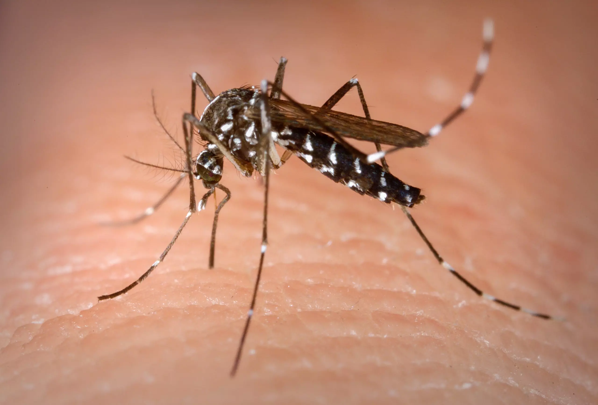

O que é dengue?
A Dengue é uma infecção viral transmitida pela espécie fêmea do mosquito Aedes aegypti, um mosquito diurno que se multiplica em depósitos de água parada acumulada nos quintais, objetos jogados nas ruas e dentro das casas. O Ministério da Saúde (MS) registrou o primeiro caso da doença no Brasil em 1981, apesar de relatos da doença já aparecerem desde o final do século XIX. Em 1986 surgiram as primeiras epidemias de Dengue, em capitais do Nordeste e no Rio de Janeiro. Desde então, a doença tem sido um problema de saúde pública não só no Brasil, uma vez que a Organização Mundial da Saúde (OMS) colocou a dengue entre as 10 ameaças globais à saúde em 2019.
Ainda de acordo com a Organização a dengue é, hoje, a mais importante arbovirose (doença transmitida por artrópodes) que afeta o homem e constitui-se em sério problema de saúde pública no mundo, especialmente nos países tropicais, onde as condições do meio ambiente favorecem o desenvolvimento e a proliferação do Aedes aegypti, principal mosquito vetor. Dengue não é contagiosa. Mas se o mosquito picar alguém doente, o vírus irá se multiplicar em seu organismo e, quando ele picar uma pessoa sadia, a doença será transmitida.
Mosquito: o vilão!
O Aedes aegypti tem em média menos de 1 centímetro de tamanho, é escuro e com riscos brancos nas patas, cabeça e corpo. O mosquito costuma ter sua circulação intensificada no verão, em virtude da combinação da temperatura mais quente e chuvas. Para se reproduzir, ele precisa de locais com água parada.
Metódo de prevenção
A melhor forma de se prevenir contra a Dengue é o combate e eliminação do mosquito transmissor. O Aedes aegypti se prolifera ao depositar seus ovos em locais com água parada, como pneus, garrafas, vasos de plantas, bebedouros e caixas d'água. Diferente do que se acredita, o Aedes não se reproduz apenas em água limpa, já que se adaptou ao ambiente urbano, à poluição da água e a recipientes artificiais. Por isso, o recomendado é não deixar água parada em nenhum local e contribuir com a conscientização coletiva de inspeção de focos de proliferação em casas e quintais, locais públicos e terrenos baldios. Inseticidas e repelentes também ajudam a eliminar o mosquito e aumentar a proteção das pessoas contra a Dengue.
São medidas bem simples, mas que ajudam na prevenção das doenças. Confira:
- Tampe os tonéis e caixa d’água;
- Deixe ralos limpos e com aplicação de tela. Coloque água sanitária nos ralos e em locais onde não seja possível alcançar para esvaziar;
- Mantenha as calhas sempre limpas;
- Deixe garrafas sempre viradas com a boca para baixo;
- Mantenha lixeiras bem tampadas;
- Elimine ou preencha pratos de vasos de plantas com areia;
- Limpe com escova ou bucha os potes de água para animais;
- Retire água acumulada na área de serviço, atrás da máquina de lavar roupa;
- Semanalmente renove a água das bromélias com jato da mangueira ou com balde de água bem cheio.
Sintomas e Apresentações da Doença
Em alguns casos, a ausência de sintomas faz com que a doença passe despercebida; em outros, ocorrem complicações graves que podem levar a óbito. Essas diferenças marcam as diferentes apresentações da doença: clássica, hemorrágica e com complicações. A Dengue clássica tem sintomas como febre alta já de imediato, com temperaturas acima de 38,5ºC, dores intensas de cabeça, nos olhos e nos músculos do corpo inteiro. Em metade dos casos, manchas avermelhadas pelo corpo surgem em torno do 4º dia da infecção. São sintomas comuns também calafrios, náuseas e vômitos. Existem quatro vírus que podem ser causadores da infecção: DENV-1, DENV-2, DENV-3 e DENV-4.
Pacientes que já contraíram algum dos vírus, em caso de nova infecção, podem desenvolver uma forma mais grave da doença, chamada Dengue Hemorrágica. Nesses casos, além dos sintomas da Dengue comum serem mais intensos, complicações sérias podem surgir: a temperatura corporal baixa depois do 3º ou 4º dia, dor severa na região abdominal, vômito persistente e com sangue, respiração acelerada, sangramento das gengivas, fadiga e inquietação. Por conta dos sangramentos, da dificuldade na respiração e do comprometimento dos órgãos, casos de Dengue Hemorrágica podem ser fatais, principalmente de 24h a 48h após o estágio mais crítico. Os sintomas duram em média sete dias, dependendo do estado de saúde do paciente antes de adoecer. Em geral, adultos saudáveis costumam se recuperar da doença em apenas três dias.
Diagnóstico e Tratamento
A comprovação laboratorial das infecções pelo vírus da dengue faz-se pelo isolamento do agente ou pelo emprego de métodos sorológicos - demonstração da presença de anticorpos da classe IgM em única amostra de soro ou aumento do título de anticorpos IgG em amostras pareadas (conversão sorológica).
Isolamento: é o método mais específico para determinação do sorotipo responsável pela infecção. A coleta de sangue deverá ser feita em condições de assepsia, de preferência no terceiro ou quarto dia do início dos sintomas. Após o término dos sintomas não se deve coletar sangue para isolamento viral.
Sorologia: os testes sorológicos complementam o isolamento do vírus e a coleta de amostra de sangue deverá ser feita após o sexto dia do início da doença.
Assim como outras doenças transmitidas pelo mosquito Aedes aegypti, como a Chikungunya e o Zika vírus, a Dengue não possui vacina e nenhum medicamento ou tratamento específico. Geralmente, quando se iniciam os sintomas da dengue, é recomendado o uso de analgésicos para as dores e paracetamol para a febre, além de cuidados para a reidratação corporal. Ao identificar qualquer um dos sintomas, um médico deve ser consultado.
O que fazer quando vejo um foco?
Se tiver acesso ao local, executar as medidas de prevenção citadas acima, caso não tenha, notificar o órgão público da sua região. Por ser uma doença de notificação compulsória, todo caso suspeito deve ser comunicado, pela via mais rápida, ao Serviço de Vigilância Epidemiológica mais próximo.
A OMS preconiza que há maior probabilidade de ser deflagrada uma epidemia quando os índices de infestação predial (número de imóveis com focos positivos de Aedes aegypti sobre o total de imóveis inspecionados vezes 100) estão acima de 5%. No entanto, não existe nível "limite" abaixo do qual se possa ter certeza de que não ocorrerão surtos de dengue. Em áreas com Aedes, o monitoramento do vetor deve ser realizado constantemente, para conhecer as áreas infestadas e desencadear as medidas de combate.